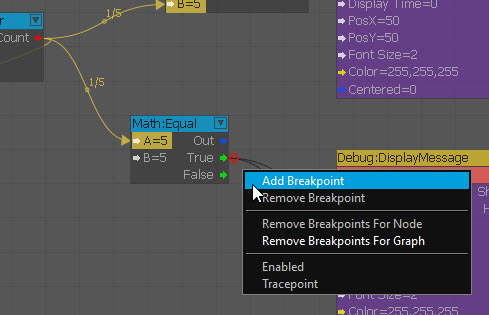
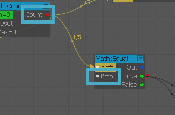
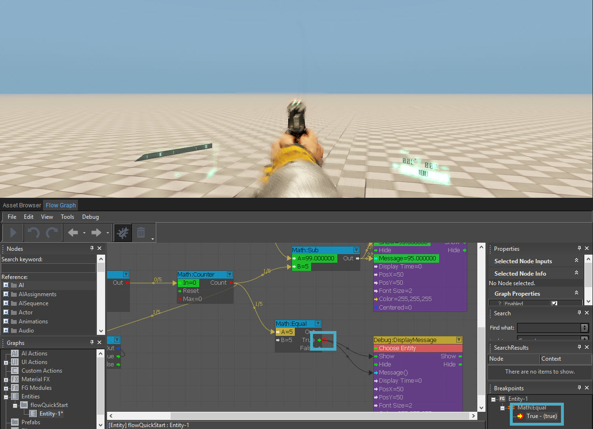
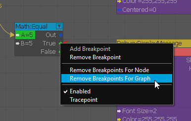
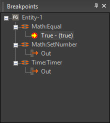

Как вы используете точки останова?
Поначалу может быть трудно понять, что конкретно дает точка останова, кроме как заморозить вашу игру и сообщить вам, что порт сработал. Присмотревшись к дереву точек останова, хотя, мы видим, что мы также вознаграждены точной информацией, полученной в этот момент. Сбор этих фактов вместе позволяет нам увидеть порядок выполнения нашего графика и облегчает поиск неправильных данных, передаваемых через порты.
Добавление точек останова
- Добавить Математика:Равно node и проверьте значение 95 быть триггером точки останова. Добавьте точку останова, щелкнув правой кнопкой мыши порт и выбрав Добавить точку останова. Имейте в виду, что вам понадобится Отладка тоже включился.
В нашем случае точка останова сработает при достижении 5. - Зайдите в игру; это не должно ничего вызывать, пока вы не достигнете обратного отсчета 95 и, таким образом, игра была поставлена на паузу, чтобы исследовать конкретную точку, которая сработала. Вы увидите зависание игры в окне просмотра, а для точки останова будет установлено значение «True» на панели «Точки останова» редактора Flow Graph.
- Имейте в виду, что вы можете очистить один экземпляр и удалить точку останова, щелкнув правой кнопкой мыши по одному порту. В этом же меню вы также можете очистить все, что связано с графиком.
- Последний момент, о котором следует помнить: у вас могут быть очень сложные графики с несколькими точками останова в дереве. Более простой, но не столь заметный способ сортировки — через Точки останова панель дерева в правом нижнем углу инструмента Flow Graph.
Шаг 1.1

Шаг 1.2

Шаг 2

Шаг 3

Шаг 4
